The image is loaded and assigned to the "im".
The loaded image has 16 bits per integer (uint16) and its width is 4290 and height is 2856.
The image is converted into a double-precision array data type by 'double' function.
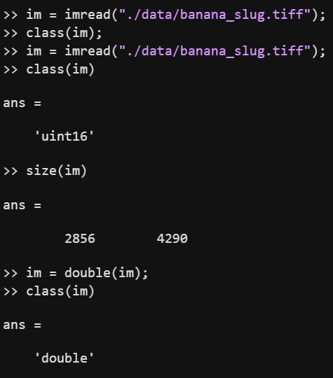
Fig 1. Initials
LINEARIZATION
By subtracting 2047 from all image pixels and dividing them by 15000 - 2047, I map the value 2047 to 0 and the value 15000 to 1.
The image is clipped within the range [0, 1] by 'min' and 'max' function.
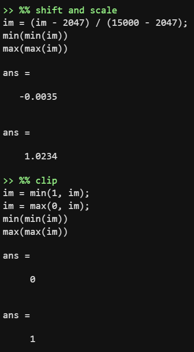
Fig 2. Linearization
IDENTIFYING THE CORRECT BAYER PATTERN
For identifying the correct pattern, I visualize the images of four patterns using the following code.
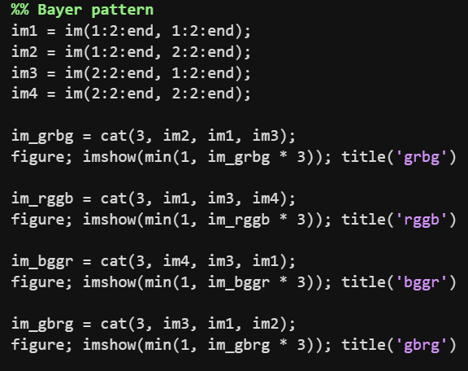
Fig 3. Code for visualizing images of four patterns.
Fig 4. Images of four patterns.
Among the above images, it can be seen that the 'rggb' image has a realistic color, especially since the banana color is yellow.
From this, we can see that our image has 'rggb' pattern.
WHITE BALANCING
I implement the white world and gray world automatic whith balancing.
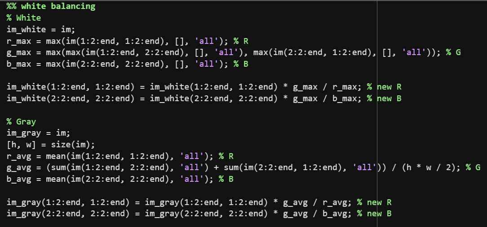
Fig 5. Code of two white balancing algorithms.
The maximum value for each color is obtained through the 'max' function, and the average value of red and blue is obtained by the 'mean' function.
The average of green is obtained by adding two sum of green values and dividing it by half the total number of pixels.
The following image is a visualization of the results of each algorithm.
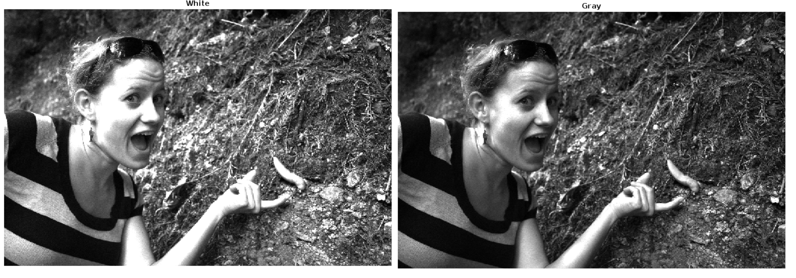
Fig 6. Visualization of two algorithms.
DEMOSAICING
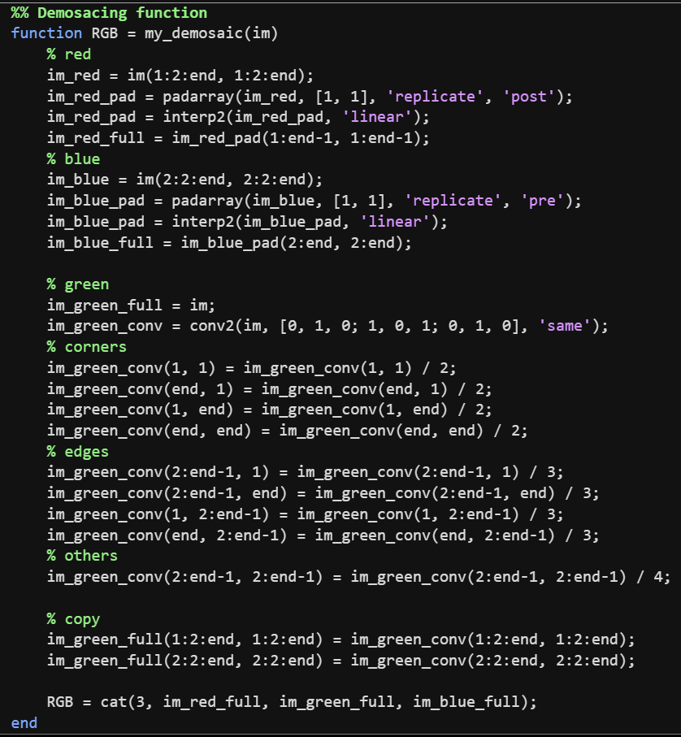
Fig 7. Code of implemented demosaicing function.
For demosaicing red and blue using 'interp2' function, padding is needed.
Matlab's 'interp2' function only interpolates between pixels, so it cannot calculate the values of the right and bottom for red and the left and top for blue.
To obtain a full-resolution red and blue channel, red pixel matrix is padded on the right and bottom and blue pixel matrix is padded on the left and top with replicated values of the edges, followed by an 'interp2' function, and then the padded part is cut to obtain the final result.
In the case of green pixels distributed like checkerboard, it is difficult to interpolate with 'interp2' functions to the best of my knowledge, so I implement bilinear interpolation through convolution.
I checked the instructions not to implement the interplation manually, but I did this because I wanted to implement it accurately, so please understand.
2D convolution is performed on the RAW image using a 3x3 matrix as shown in the image below to obtain the sum of the up, down, left, and right pixels.
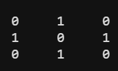
Fig 8. Filter for demosaicing green.
The values at the corners are divided by 2 because they are the sum of two green pixels, the values at the edges except the corners are divided by 3 because they are the sum of three pixels,
and the rest are divided by 4 because they are the sum of four adjacent pixels.
By copying the calculated values to the red and blue positions of the RAW image, we can obtain a green full-resolution channel.
Fig 9. Visualization of two white balanced images after demosaicing and the cropped image.
The above images are the results of demosaicing two white balanced images, and the bayer pattern cannot be found when cropped and zoomed.
BRIGHTNESS ADJUSTMENT AND GAMMA CORRECTION
The pre-brightening maximum grayscale values are obtained through the code below.
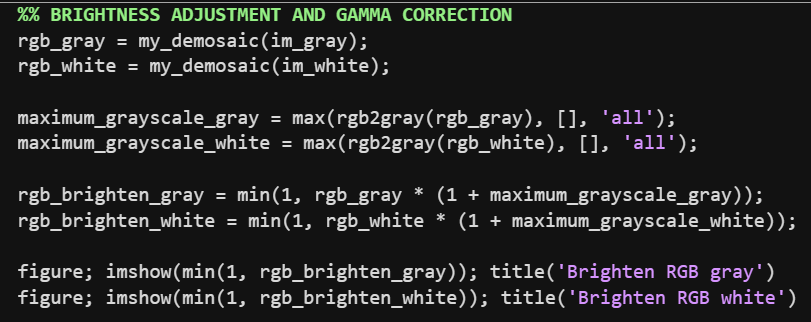
Fig 10. Implementation of brightening.
Since the obtained maximum values range from 0 to 1, I interpret the values as percentages and use them to brighten the image.
(For example, if the maximum value is 0.8, the pixel value of the image is increased by 80 percent. I'm not sure if this is the intention of the problem, so please understand.)
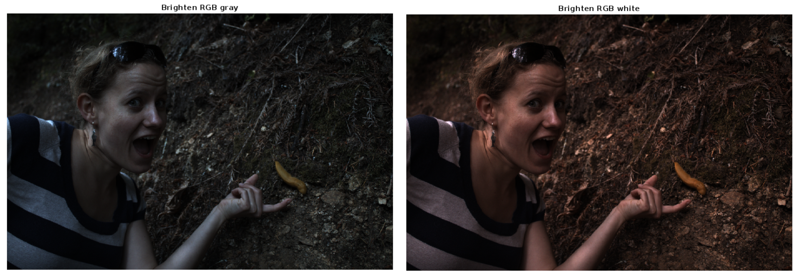
Fig 11. Brightening images.
As shown in the image above, it looked dark when the brightness was adjusted in this way.
After using several percentages, three times seemed the most appropriate.
I implemented the gamma correction as shown in the code below, and the result image is shown in the image below.
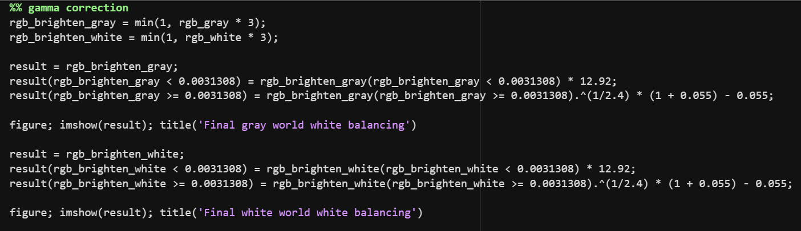
Fig 12. Implementation of gamma correction.
I implemented to copy the calculated values to their locations on the copied image,
because the changed values can result in duplicate calculations of the same pixels when assigned the calculated values to the same image.
The final result images with a brightness scale of 300% and gamma correction are as follows.
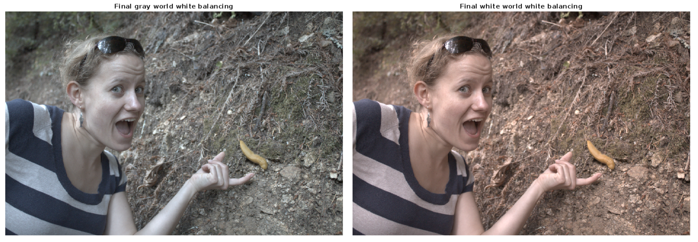
Fig 13. Final result of two white balanced images.
As a result of checking the final images, the gray world white-balanced image looks better personally
because the white world white-balanced image looks somewhat yellowish.
COMPRESSION
The following figure is the jpeg image with quality 95 and the png image.
It was difficult to tell the difference between the two images even when zoomed in.
Since the png image is 16.4 MB and the jpeg image is 3.18 MB, the compression ratio is about 19%.
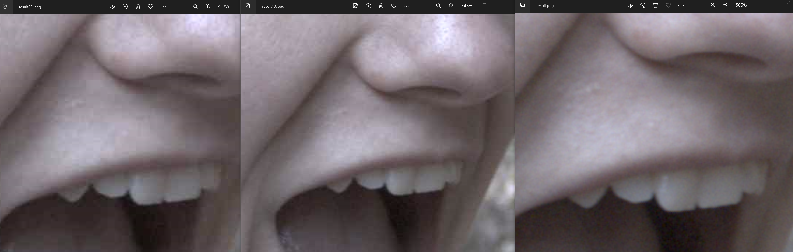
Fig 15. Images with different qualities.
(Left) .JPEG with quality 30 (Center) .JPEG with quality 40 (Right) .PNG
Referring to the figure above, the lowest quality setting seems to be 40.
When zoomed, there is no significant difference between quality 40 and png, but quality 30 shows a difference in quality, such as visible pixel square shape.
Since the png image is 16.4 MB and the jpeg image with quality 40 is 0.665 MB, the compression ratio is about 4%.